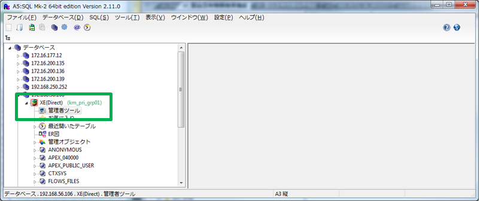
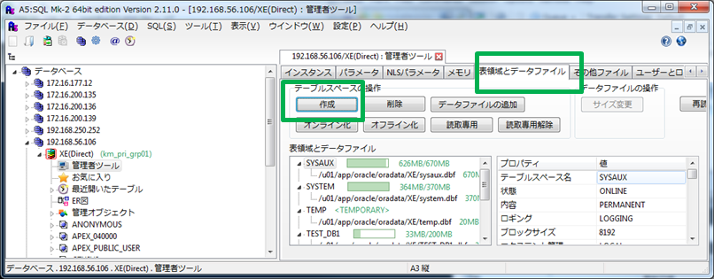
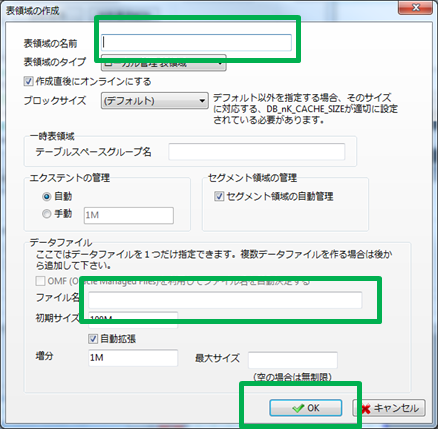
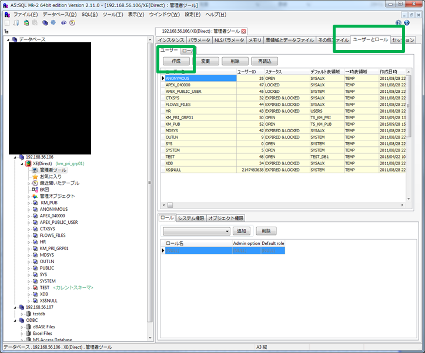

最終更新日付：2016/11/27（日）
Oracleの構築と運用
(A5を使用)テーブル領域作成



(A5を使用)ユーザ作成

ORA-04063
- ORA-04063: ビュー'view_name'にエラーがあります。
- ORA-04063エラーは、アクセスしたオブジェクトが無効である場合に発生します。
- http://www.cosol.jp/tech/detail/ot0037_ora04063.shtml
- ビュー作成後にビューで参照しているテーブルなどにALTER等を行うと現象が出る模様。
- テーブルを先に作成し、ビューを後で作成するか、ビューを再作成する必要がある。
ビューと表の権限の関係
エクスポートとインポート
データのみの場合の新しいダンプコマンド
★ダンプスキーマごと（エクスポート）http://dbtuning.seesaa.net/article/142143213.html
- ディレクトリを作成する
- ディレクトリを登録
SQL> CREATE DIRECTORY DumpDir as 'c:\temp\dump'; ダンプ用
SQL> CREATE DIRECTORY LogDir as 'c:\temp\log'; ログ用
- 登録したディレクトリの確認
SQL> SELECT * FROM DBA_DIRECTORIES;
- エクスポート
expdp km_pub/km_pub_pass dumpfile=DumpDir:km_pub.dmp logfile= LogDir:km_pub.log schemas=km_pub
expdp km_pri_grp01/km_pri_grp01_pass dumpfile=DumpDir:km_pri_grp01.dmp logfile= LogDir:km_pri_grp01.log schemas=km_pri_grp01
※ DB全体
expdp system/pwd dumpfile=DumpDir:expdp_all.dmp logfile= LogDirectory:expdp_all.log full=y
- インポート
impdp km_pub/km_pub_pass dumpfile=DumpDir:km_pub.dmp logfile= LogDir:km_pub.log schemas=km_pub
expdp km_pri_grp01/km_pri_grp01_pass dumpfile=DumpDir:km_pri_grp01.dmp logfile= LogDir:km_pri_grp01.log schemas=km_pri_grp01
impdp system/pwd dumpfile=DumpDir:exp_data.dmp logfile= LogDir:expdata.log schemas=scott
全テーブルデータ削除SQL作成
★全テーブル削除SQL作成
set linesize 1000
set heading off
spool G:\tmps\SQLS\all-drops.sql
SELECT 'DROP TABLE "KM_PRI_GRP01"."' || table_name || '";' FROM USER_ALL_TABLES;
SELECT 'DROP VIEW "KM_PRI_GRP01"."' || table_name || '";' FROM USER_ALL_VIEW;
--SELECT 'DROP TABLE "KM_PUB"."' || table_name || '";' FROM USER_ALL_TABLES;
spool off
まとめ
結論
CTA
広告とか。。。